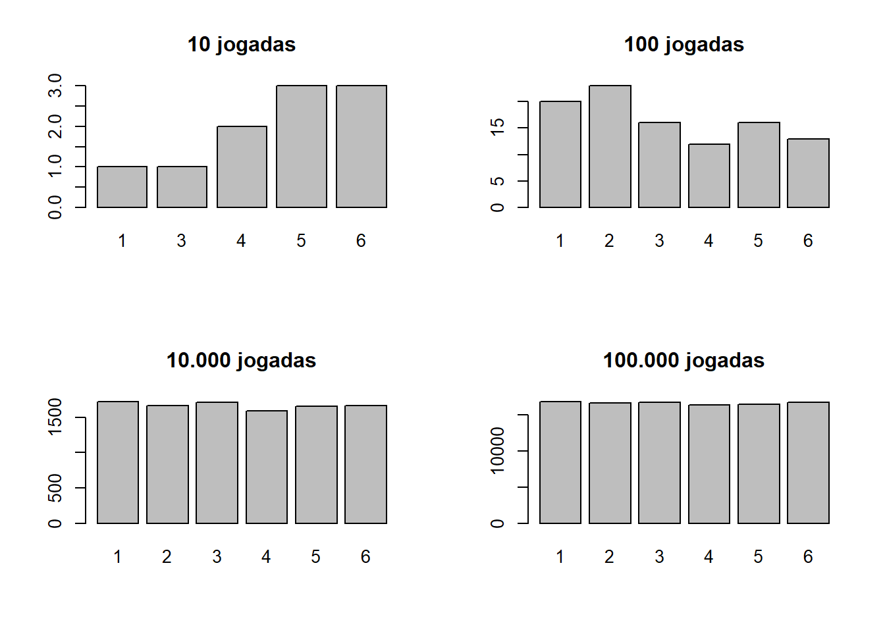
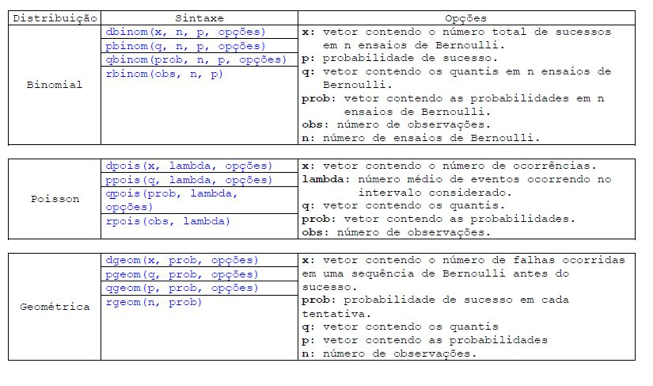
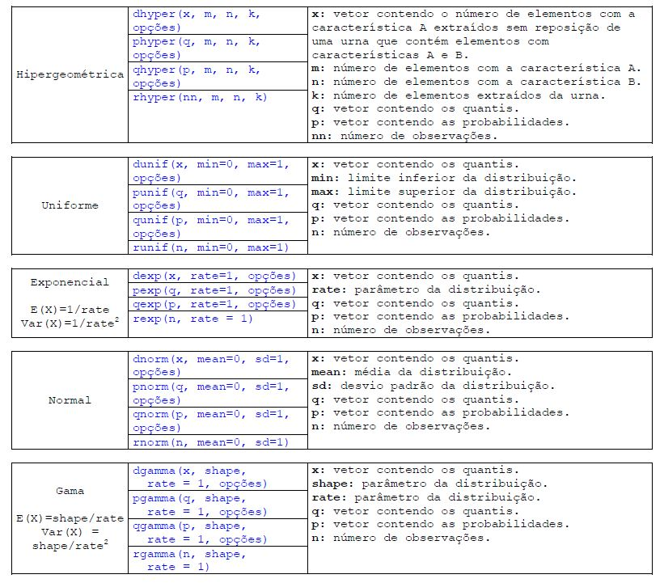
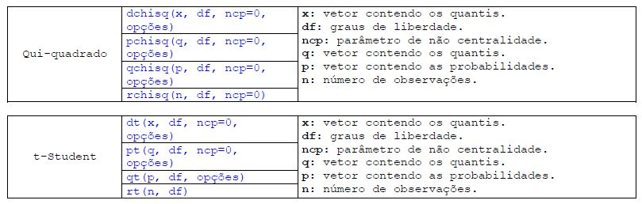
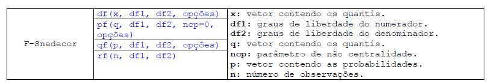

7 Probabilidade, Distribuição de probabilidade e o teste t
7.1 Probabilidade
Probabilidade é o estudo das chances de ocorrência de um resultado, que são obtidas pela razão entre casos favoráveis e casos possíveis.
Probabilidade é um ramo da Matemática em que as chances de ocorrência de experimentos são calculadas. É por meio de uma probabilidade, por exemplo, que podemos saber desde a chance de obter cara ou coroa no lançamento de uma moeda até a chance de erro em pesquisas.
Para compreender esse ramo, é extremamente importante conhecer suas definições mais básicas, como a fórmula para o cálculo de probabilidades em espaços amostrais equiprováveis, probabilidade da união de dois eventos, probabilidade do evento complementar etc.
7.1.0.0.1 Experimento aleatório
É qualquer experiência cujo resultado não seja conhecido. Por exemplo: ao jogar uma moeda e observar a face superior, é impossível saber qual das faces da moeda ficará voltada para cima, exceto no caso em que a moeda seja viciada (modificada para ter um resultado mais frequentemente).
Suponha que uma sacola de supermercado contenha maçãs verdes e vermelhas. Retirar uma maçã de dentro da sacola sem olhar também é um experimento aleatório.
7.1.0.0.2 Ponto amostral
Um ponto amostral é qualquer resultado possível em um experimento aleatório. Por exemplo: no lançamento de um dado, o resultado (o número que aparece na face superior) pode ser 1, 2, 3, 4, 5 ou 6. Então, cada um desses números é um ponto amostral desse experimento.
7.1.0.0.3 Espaço amostral
O espaço amostral é o conjunto formado por todos os pontos amostrais de um experimento aleatório, ou seja, por todos os seus resultados possíveis. Dessa maneira, o resultado de um experimento aleatório, mesmo que não seja previsível, sempre pode ser encontrado dentro do espaço amostral referente a ele.
Como os espaços amostrais são conjuntos de resultados possíveis, utilizamos as representações de conjuntos para esses espaços. Por exemplo: O espaço amostral referente ao experimento “lançamento de um dado” é o conjunto \(\Omega\), tal que:
\(\Omega\) = {1, 2, 3, 4, 5, 6}
Esse conjunto também pode ser representado pelo diagrama de Venn ou, dependendo do experimento, por alguma lei de formação.
O número de elementos dos espaços amostrais é representado por n(\(\Omega\)). No caso do exemplo anterior, n(\(\Omega\)) = 6. Lembre-se de que os elementos de um espaço amostral são pontos amostrais, ou seja, resultados possíveis de um experimento aleatório.
7.1.0.0.4 Evento
Os eventos são subconjuntos de um espaço amostral. Um evento pode conter desde zero a todos os resultados possíveis de um experimento aleatório, ou seja, o evento pode ser um conjunto vazio ou o próprio espaço amostral. No primeiro caso, ele é chamado de evento impossível. No segundo, é chamado de evento certo.
Ainda no experimento aleatório do lançamento de um dado, observe os seguintes eventos:
A = Obter um número par: A = {2, 4, 6} e n(A) = 3
B = Sair um número primo: B = {2, 3, 5} e n(B) = 3
C = Sair um número maior ou igual a 5: C = {5, 6} e n(C)= 2
D = Sair um número natural: D = {1, 2, 3, 4, 5, 6} e n(D) = 6
7.1.0.0.5 Espaços equiprováveis
Um espaço amostral é chamado equiprovável quando todos os pontos amostrais dentro dele têm a mesma chance de ocorrer. É o caso de lançamentos de dados ou de moedas não viciados, escolha de bolas numeradas de tamanho e peso idênticos etc.
Um exemplo de espaço amostral que pode ser considerado não equiprovável é o formado pelo seguinte experimento: escolher entre tomar sorvete ou fazer caminhada.
7.1.0.0.6 Cálculo de probabilidades
As probabilidades são calculadas dividindo-se o número de resultados favoráveis pelo número de resultados possíveis, ou seja: \(P=\frac{n(E)}{n(\Omega)}\)
Nesse caso, E é um evento que se quer conhecer a probabilidade, e \(\Omega\) é o espaço amostral que o contém.
Por exemplo, no lançamento de um dado, qual a probabilidade de sair o número um?
Nesse exemplo, sair o número um é o evento E. Assim, n(E) = 1. O espaço amostral desse experimento contém seis elementos: 1, 2, 3, 4, 5 e 6. Logo, n(\(\Omega\)) = 6. Desse modo: \[ P=\frac{n(E)}{n(\Omega)} \to P=\frac{n(1)}{n(6)} \to P=0,1666... \]
Outro exemplo: qual a probabilidade de obtermos um número par no lançamento de um dado?
Os números pares possíveis em um dado são 2, 4 e 6. Logo, n(E) = 3.
\[ P=\frac{n(E)}{n(\Omega)} \to P=\frac{n(3)}{n(6)} \to P=0,5 \]
Observe que as probabilidades sempre resultarão em um número dentro do intervalo \(0 \le x\le 1\). Isso acontece porque E é um subconjunto de \(\Omega\). Dessa maneira, E pode conter desde zero até, no máximo, o mesmo número de elementos que \(\Omega\).
digamos que você não esteja convecido que a probabilidade de sair uma face do dado seja de 1/6 e resolvar testar jogando o dado e anotando o valor da face. No R podemos fazer essa simulação.
dado <- c("1","2","3","4","5","6") # criando o dado
sample(dado, size = 1, replace = T) #jogar o dado uma vez## [1] "6"A função sample é utilizada para realizar amostras aleatórias e funciona assim: sample(x, size=1, replace = FALSE), onde x é o conjunto de dados do qual as amostras serão retiradas, size é o número de amostras e replace é onde você indica se a amostra deve ser feita com reposição (TRUE) ou sem reposição (FALSE).
jodas_10 <- sample(dado, size = 10, replace = T) #jogar o dado 10 vezes
jodas_100 <- sample(dado, size = 100, replace = T) #jogar o dado 100 vezes
jodas_10000 <- sample(dado, size = 10000, replace = T) #jogar o dado 10.000 vezes
jodas_100000 <- sample(dado, size = 100000, replace = T) #jogar o dado 100.000vezespar(mfrow=c(2,2))
barplot(table(jodas_10), main = "10 jogadas")
barplot(table(jodas_100), main = "100 jogadas")
barplot(table(jodas_10000), main = "10.000 jogadas")
barplot(table(jodas_100000), main = "100.000 jogadas")
Quando o experimento for executado repetidamente, os resultados individuais parecerão ocorrer de forma acidental. Contudo, quando o experimento for repetido um grande número de vezes, uma configuração definida ou regularidade surgirá. É esta regularidade que torna possível construir um modelo matemático preciso, com o qual se analisará o experimento.
Por ora, o leitor necessita apenas pensar nas repetidas jogadas de uma moeda equilibrada. Muito embora caras e coroas apareçam sucessivamente, em uma maneira quase arbitrária, é fato empírico bem conhecido que, depois de um grande número de jogadas, a proporção de caras e a de coroas serão aproximadamente iguais.
Outra situação: temos dados referentes a alunos matriculados em quatro cursos de uma universidade em dado ano.
FACE<-read.csv("alunos.txt", sep = "")Vamos indicar por M o evento que ocorre quando, escolhendo-se ao acaso um aluno do conjunto desses quatro cursos, ele for um estudante de Matemática Pura. A, E, C, H e F têm significados análogos.
Dessa maneira, qual a P(E)?
Qual é a P(A \(\cap\) H)?
7.1.0.0.7 Combinatória
Calcula o número de combinações de n elementos em grupos de tamanho k.
sintaxe:
choose(n,k)
Um administrador de um fundo de ações dispõe de ações de 10 empresas para a compra, entre elas as da empresa R e as da empresa S. a) De quantas maneiras ele poderá escolher 7 empresas, entre as 10?
choose(10,7)## [1] 120- Se entre as 7 empresas escolhidas devem figurar obrigatoriamente as empresas R e S, de quantas formas ele poderá escolher as empresas?
choose(8,5)## [1] 567.1.0.0.8 Fatorial
Calcula o fatorial de x.
sintaxe:
factorial(x)
factorial(5)## [1] 1207.1.1 Distribuição de probabilidade
Tal como nos modelos determinísticos, nos quais algumas relações funcionais desempenham importante papel (como por exemplo a linear, a quadrática, a exponencial, a trigonométrica etc.), também verificamos que, na construção de modelos não-determinísticos para fenômenos observáveis, algumas distribuições de probabilidade surgem mais freqüentemente que outras. Um motivo para isso é que, da mesma maneira que no caso determinístico, alguns modelos matemáticos relativamente simples parecem ser capazes de descrever uma classe bastante grande de fenômenos.
Diversas situações reais muitas vezes se aproximam de certas distribuições estocásticas definidas por algumas hipóteses. Daí a importância de se conhecer e manipular algumas destas distribuições tão presentes em nosso cotidiano. Veja a lista abaixo com algumas funções para gerar valores amostrais de distribuições e seus respectivos parâmetros. Nos detalhes de cada função, os valores indicados (como por exemplo: mean=0, na distribuição normal) são os possíveis por definição (default), mas podem ser alterados pelo usuário ao seu bel prazer, já os que não estão indicados, significa que o parâmetro deve ser especificado pelo usuário.
Adicionalmente, outras letras (p, d, q, além do r) adicionadas previamente ao código das distribuições podem ser usadas, com diferentes propósitos. Resumidamente temos:
r: Gerador de números aleatórios. Requer argumentos especificando o tamanho da amostra, além dos parâmetros requeridos pela distribuição de interesse;
p: Função de probabilidade. Requer um vetor de percentis, além dos parâmetros requeridos pela distribuição de interesse;
d: Função densidade. Requer um vetor de percentis, além dos parâmetros requeridos pela distribuição de interesse;
q: Função de percentis. Requer um vetor de probabilidades (0 < p < 1), além dos parâmetros requeridos pela distribuição de interesse.
7.1.1.1 Distribuição
   
7.1.2 Exercicios
7.1.2.1 Consultoria sobre investimentos
A diretoria da empresa X, especializada em aplicações na bolsa de valores, vai se reunir com o objetivo de tomar 10 importantes decisões sobre compra e venda de ações. São consideradas decisões acertadas, por exemplo: vender ações de uma companhia cuja cotação, posteriormente, venha a cair; comprar ações de uma companhia cuja cotação, posteriormente, venha a subir, etc. A diretoria estabeleceu uma meta a ser atingida: que sejam tomadas decisões corretas em pelo menos 8 desses 10 casos. Por outro lado, a experiência mostra que, diante de tais situações, a diretoria tem tomado decisões acertadas em cerca de 60% dos casos. Como desta vez as decisões a serem tomadas são consideradas fundamentais para a continuidade dos negócios da empresa X, está sendo cogitada a possibilidade de se contratar uma equipe de consultores, experts no mercado financeiro, para participarem dessa reunião. Acredita-se que, com a presença desses consultores, a margem de acerto nas decisões a serem tomadas aumentaria para cerca de 70%. Calcule a probabilidade de que a meta estabelecida seja atingida:
Sem a contratação dos consultores;
Com a contratação dos consultores.
7.1.2.2 Queda na Bolsa
Você tem uma carteira com 15 ações. No pregão de ontem 75% das ações na bolsa de valores caíram de preço. Supondo que as ações que perderam valor têm distribuição binomial:
Quantas ações da sua carteira você espera que tenham caído de preço?
0.75*15## [1] 11.25Qual o desvio padrão das ações que tem na carteira?
n=15
p=0.75
sqrt(n*p*(1-p))## [1] 1.677051Qual a probabilidade que as 15 ações da carteira tenham caído?
\(P=(X=15) = {n\choose k} p^k q^{n-k} = {15\choose 15}0,75^{15}(1-0,75)^{15-15}=\frac{15!}{13!(15-15)!}(0,75)^{15}(0,25)^{0}=0,0134\)
dbinom(15, 15, 0.75)## [1] 0.01336346Qual a probabilidade que tenham caído de preço exatamente 10 ações?
dbinom(10,15,0.75)## [1] 0.165146Qual a probabilidade que treze ou mais ações tenham caído de preço?
dbinom(13,15,0.75)+dbinom(14,15,0.75)+dbinom(15,15,0.75)## [1] 0.23608787.1.3 Teste t
Em vez de procurar-se uma estimativa do parâmetro, freqüentemente nos parecerá conveniente admitir um valor tético para ele e, depois, utilizar a informação da amostra para afirmar ou rejeitar esse valor hipotético.
Um teste t é um teste de hipótese da média de uma ou duas populações distribuídas normalmente. Existem diversos tipos de testes t para diferentes situações, mas todos usam uma estatística de teste que segue uma distribuição t sob a hipótese nula:
Teste t para 1 amostra - Testa se a média de uma única população é igual a um valor alvo - A altura média das estudantes universitárias é maior que 1,65 m?
Teste t para 2 amostras - Testa se a diferença entre as médias de duas populações independentes é igual a um valor alvo - A altura média das estudantes universitárias é significativamente diferente da altura média dos estudantes universitários?
Teste t pareado - Testa se a média das diferenças entre observações independentes ou pareadas é igual a um valor alvo - Se você mede a altura de estudantes universitários do sexo masculino antes e depois que cada sujeito toma uma pílula para perder peso, a perda de peso média é suficientemente significante para concluir que a pílula funciona?
Teste t na saída da regressão - Testa se os valores dos coeficientes na equação de regressão diferem significativamente de zero - As notas no vestibular constituem preditores significantes das notas na universidade?
Uma propriedade importante do teste t é a sua robustez contra pressupostos de normalidade da população. Em outras palavras, com amostras grandes, os testes t são muitas vezes válidos mesmo quando o pressuposto de normalidade é violada. Esta propriedade os torna um dos procedimentos mais úteis para fazer inferências sobre médias da população.
No entanto, com um tamanho amostral pequeno e não-normal e distribuições altamente assimétricas, talvez fosse mais apropriado utilizar testes não-paramétricos.
#Testa se as médias de duas variáveis são iguais. Muito utilizado para comparação de
#desempenho etc.
# t.test(x, y, alternative, conf.level, paired)\[H_0 :\mu_x = \mu_y \]
Onde:
x: Variável 1. Deve ser da classe “numeric”
y: Variável 2. Deve ser da classe “numeric”
alternative: Indica o tipo da hipótese alternativa. “two.sided”indica \(\mu_x = \mu_y\), “greater”indica \(\mu_x > \mu_y\), “less”indica \(\mu_x < \mu_y\). Por padrão alternative = “two.sided”.
conf.level: Nível de confiança para o intervalo de confiança do teste. Por padrão conf.level = 0.95.
paired: Indica se o teste é pareado ou não. Por padrão paired = FALSE.
Pré-suposições: Para aplicação do teste T, algumas pré-suposições devem ser cumpridas, que são: As variâncias devem ser iguais. AS distribuições de probabilidade das variáveis devem ser normais.
ou seja, para aplicarmos o teste T precisamos testar duas hipoteses antes, se as variáveis possuem a mesma variâancia e se são gaussianas.
7.1.3.1 Referências
W. O. Bussab e P. A. Morettin (1987) - Estatística Básica - 4 Edição, Atual Editora
P. L. Meyer (1983) - Probabilidade: Aplicações à Estatística, segunda edição, Livros técnicos e Científicos Editora
Introdução ao uso do programa R - INPA PPGE - Victor lemes Landeiro
Software Livre R: aplicação estatística - Emanuel Fernando Maia de Souza, Luiz Alexandre Peternelli, Márcio Pupin de Mello
R para cientistas sociais - Jackson Alves de Aquino
Introdução à Linguagem R para Pós-Graduandos em Ecologia e áreas afins - http://ecologia.ib.usp.br/ bie5782/doku.php?id=start
Introductory Statistics with R - Peter Dalgaard
https://brasilescola.uol.com.br/matematica/probabilidade.htm
R Core Team (2018). R: A language and environment for statistical computing. R Foundation for Statistical Computing, Vienna, Austria. URL https://www.R-project.org/.
aluno: Vítor Salgado
prof: Paula Hamberger